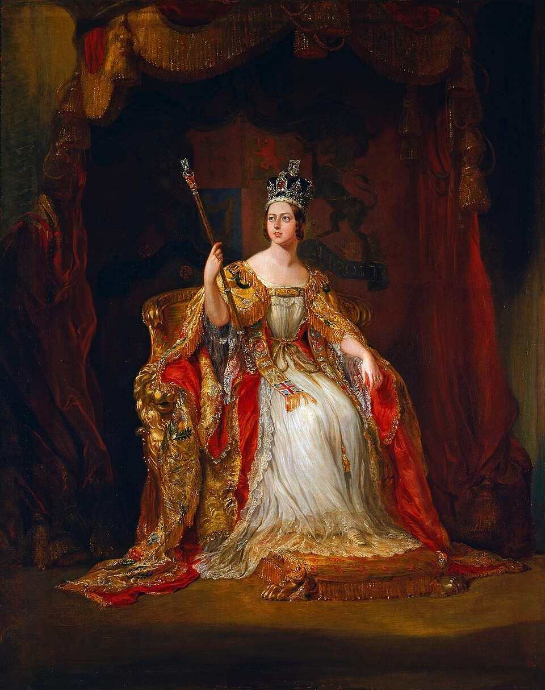
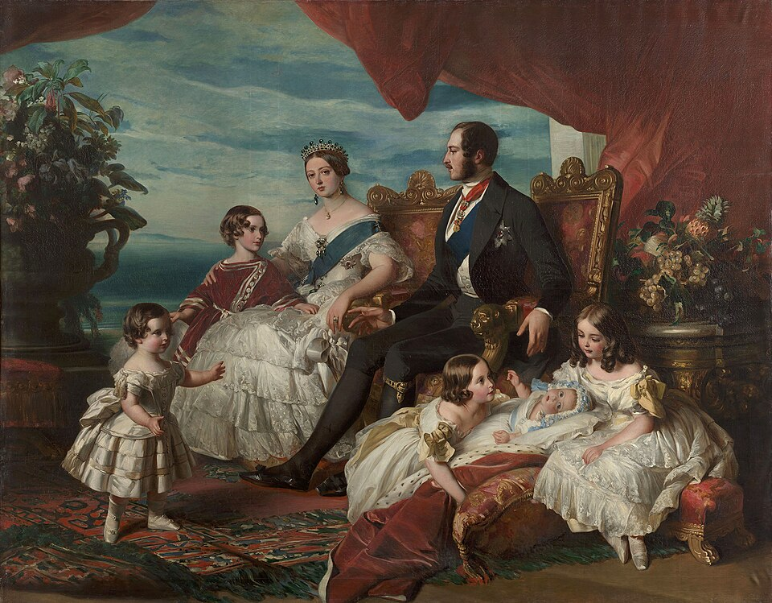
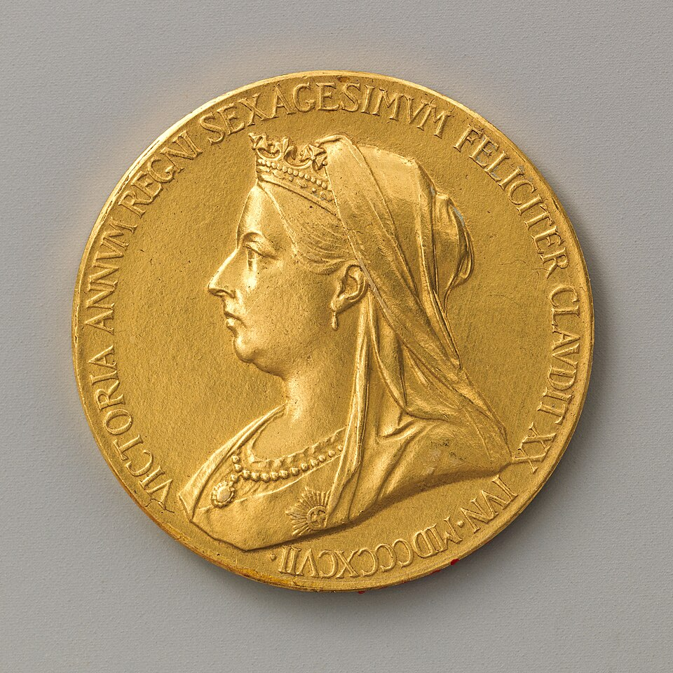

출처: Wikimedia Commons — Queen Victoria by Alexander Bassano (1882) · 퍼블릭 도메인
⏱️ 10초 카드 · 빅토리아 시대 (1819~1901)
입헌군주대영제국인도 황제유럽의 할머니
여는 질문 — 한 시대에 한 사람의 이름이 붙는다는 건 — 누구의 시대였을까?
이름
한국어빅토리아 여왕
원어Queen Victoria
실제 발음빅토리아
로마자Victoria
영어권Queen Victoria
별칭유럽의 할머니
영국 · 1819~1901
왜 이 사람인가
이 도감에서 빅토리아는 '제국의 얼굴'이에요. 직접 정복하거나 통치하진 않았지만, 그가 상징한 63년 동안 영국은 역사상 가장 큰 제국이 됐죠. 한 사람의 화려한 시대가 모두에게 화려했는지를 묻게 하는, 빛과 그림자가 한 몸인 인물이에요.
생애
18세에 왕위에 올라 63년 7개월을 다스렸어요. 그동안 영국은 '세계의 공장'이자 역사상 가장 큰 제국이 되었고, 그 시대 전체가 '빅토리아 시대'라고 불려요. 정치에 직접 나서기보다 입헌군주(헌법 아래의 왕)의 모범을 보이며 제국의 '얼굴'이 되었죠.
아홉 자녀와 수십 명의 손주들이 독일·러시아 등 유럽 왕실 곳곳과 결혼해 '유럽의 할머니'로 불렸어요. 훗날 1차대전에서 맞붙는 영국 왕·독일 황제·러시아 황후가 모두 그의 손주였다는 건 역사의 얄궂은 농담이죠.
1877년에는 '인도 황제' 칭호를 더했어요. 여왕의 화려한 시대 아래에서 인도의 기근, 아일랜드의 굶주림, 식민지의 수탈이 함께 진행됐다는 것 — 그 빛과 그림자를 같이 봐야 이 시대가 보여요.
자료로 보기 — 유묵·사진

즉위 초상 (1838, 조지 헤이터)열여덟에 즉위한 직후의 모습이에요. 이 작은 체구의 젊은 여왕이 63년을 다스리게 되리라곤 아무도 몰랐죠.출처: Wikimedia Commons · 퍼블릭 도메인
왕실 가족 (1846, 빈터할터 화풍)빅토리아·앨버트 부부와 아이들이에요. 이 아이들과 손주들이 유럽 곳곳의 왕실로 퍼져, 그는 '유럽의 할머니'가 됐죠.출처: Wikimedia Commons · 퍼블릭 도메인
즉위 60주년 기념 금메달 (1897)재위 60주년(다이아몬드 주빌리)을 기린 메달이에요. 베일을 쓴 노년의 옆모습은 제국 전성기의 상징처럼 쓰였어요.출처: Wikimedia Commons (MET) · 퍼블릭 도메인남긴 말
“착하게 살겠어요. (I will be good.)”
열한 살, 가정교사가 왕위 계승 순위를 처음 알려 주자 한 말로 전해져요. 어린 왕녀의 책임감을 보여 주는 일화예요. · 출처: 가정교사 레첸 남작부인의 회고
“우리는 패배의 가능성에 관심이 없습니다. 그런 것은 존재하지 않습니다.”
보어 전쟁이 어둡게 흘러가던 1899년, 그에게 전해지는 말 — 제국의 자신감(과 그 위태로움)을 동시에 보여 줘요. · 출처: 전해지는 말(attributed, 1899)
연표
- 1819출생 (런던 켄징턴궁)
- 183718세에 즉위
- 1877'인도 황제' 칭호 — 제국의 상징이 되다
- 1897즉위 60주년 — 제국 전성기의 절정
- 1901서거 — 한 시대의 끝
한 여왕의 '집'들 — 켄징턴에서 오스본까지
빅토리아는 멀리 여행하기보다 영국 안의 거처들을 옮겨 다녔어요. 그의 집을 따라가면 한 사람의 63년이 보여요.
현재 지도 위 표시예요. 빅토리아는 제국을 다스렸지만, 정작 본인은 영국 밖으로 거의 나가지 않았어요.
빛과 그림자안정된 입헌군주제의 모범이자 한 시대의 이름이 된 왕 — 그러나 그 영광의 토대는 식민지의 땀과 눈물이었어요. 한 사람의 '좋은 시대'가 모두에게 좋은 시대였는지 묻게 하는 인물이에요.
더 깊이 (고등·일반)
'빅토리아 시대'란 무엇일까
산업혁명의 절정, 철도와 공장, 엄격한 도덕주의, 그리고 세계로 뻗은 제국 — 이 모든 것이 한 사람의 재위 기간(1837~1901)과 겹쳐, 그 시대 전체에 '빅토리아 시대'라는 이름이 붙었어요. 한 사람의 이름이 한 시대를 덮은 드문 경우죠.
군림하되 통치하지 않는다
빅토리아는 '입헌군주'의 모범으로 불려요. 법(헌법)과 의회 위에 군림하지 않고, 정치는 총리와 의회에 맡겼죠. 그래도 보이지 않는 영향력은 컸어요 — 수십 년간 총리들과 면담하고 방대한 편지를 남겼거든요.
'유럽의 할머니'
아홉 자녀와 수십 명의 손주가 독일·러시아·스페인 등 유럽 왕실로 시집·장가 갔어요. 훗날 1차대전에서 맞붙는 영국 왕 조지 5세, 독일 황제 빌헬름 2세, 러시아 황후가 모두 그의 손주였죠. 또 그가 보유한 혈우병 유전자가 유럽 왕실로 퍼진 것도 유명해요.
1877년, '인도 황제'가 되다
총리 디즈레일리의 권유로 빅토리아는 '인도 여제(Empress of India)' 칭호를 더했어요. 영국 본토에 한 번도 와 본 적 없는 수억 인도인의 군주가 된 거예요. 제국의 상징이 정점에 오른 순간이자, '왕관의 보석' 인도를 거머쥔 표시였죠.
빛과 그림자를 같이 보기
그의 화려한 시대 아래에서 아일랜드 대기근, 인도의 거듭된 대기근, 식민지의 수탈이 함께 진행됐어요. '좋은 시대(Good Old Days)'라는 향수 뒤에 누가 대가를 치렀는지 — 같은 시대를 다른 자리에서 보면 전혀 다른 그림이 나와요.
더 공부하기 — 여기서 출발하세요
📍 가 볼 곳
- 오스본 하우스 (와이트 섬)여왕이 가장 사랑한 별궁이자 1901년 서거 장소.
- 켄징턴 궁 (런던)1819년 출생지.
- 빅토리아 기념비 (버킹엄궁 앞)제국의 정점을 기리는 대형 기념물.
이 인물에게 편지